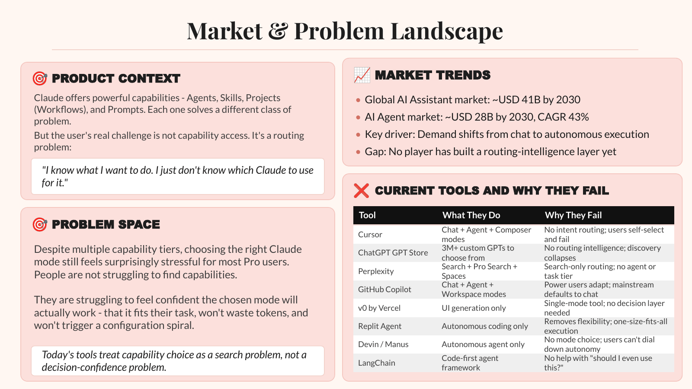
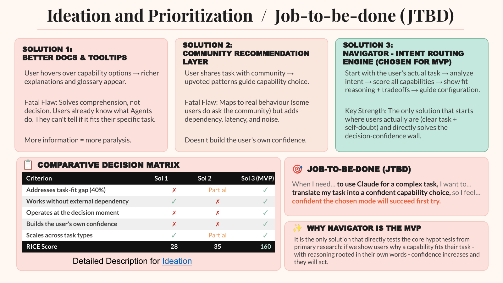
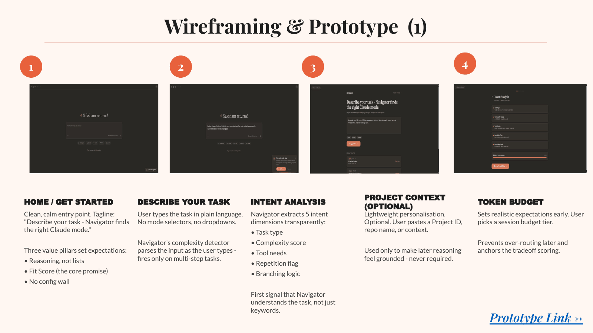
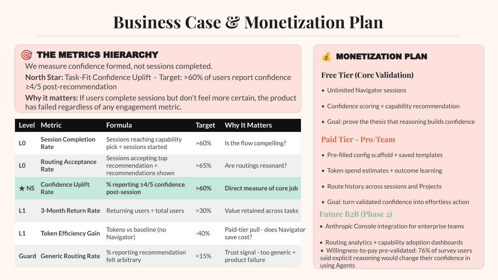

The capabilities weren't the problem. Choosing was.
Claude offers several ways to get work done: Agents, Skills, Projects and prompts. Users know the outcome they want, but not which mode fits the task without wasting time, tokens or effort.
Today's tools treat choosing a capability as a search problem. Navigator treats it as a decision-confidence problem.
The friction happens at the moment of decision
I surveyed 25 Claude Pro and Team users with behavioural questions about real tasks they had tried. The evidence pointed to decision friction, not a lack of awareness.
| Where it broke | Users | What happened |
|---|---|---|
| Selection | 10 of 25 | Didn't know whether an Agent fit the task. |
| Trade-offs | 7 of 25 | Couldn't judge the cost, quality and speed trade-offs. |
| Setup | 4 of 25 | Hit a configuration wall after choosing an Agent. |
| Cost anxiety | 3 of 25 | Worried about wasting tokens on the wrong approach. |

Who it's for: the frustrated capable explorer
These users already understand AI and want to use the advanced capabilities, but keep failing at the choosing or setup step. The persona built from the research: Arjun, 29, a senior engineer who uses Claude every day for code review, debugging and research.
His pattern is a clear task, then a configuration wall, then trial and error and manual re-prompting. The feeling is self-doubt, not doubt in Claude. He wants a clear signal that a capability fits, and a pre-filled path, not more documentation.
What to build: routing, not more documentation
I compared three directions on whether they close the task-fit gap, avoid outside dependencies, help at the moment of decision, build confidence and scale, then scored each with RICE.
| Option | RICE | Why |
|---|---|---|
| Better docs and tooltips | 28 | Users already know what each capability does. Docs don't answer "does this fit my task?" |
| Community recommendations | 35 | Matches how people ask today, but adds noise, delay and dependence on others. |
| Navigator MVP | 160 | Starts from the user's actual task, scores each capability and explains the trade-offs before any setup. |
Turn a complex task into a capability choice the user believes will work on the first try.

Remove the mode selector from the start
The prototype starts with the user's task in plain language. Navigator detects complexity, pulls out intent signals, and only then shows ranked capabilities with reasoning the user can check. Try it yourself.
- Describe your taskNo mode selector. The user starts with the job they need done.
- Intent analysisFive signals: task type, complexity, tool needs, whether it repeats, and whether it branches.
- RecommendationThree ranked capability cards with a fit score, quoting the user's own words to explain the fit.
- ConfigurationA paid-tier idea: pre-filled Agent, Project or Skill setup, token estimates and saved templates.

How it works: reasoning visible from task to outcome
| Layer | What it does |
|---|---|
| Data ingestion | Takes in the task, its context and the token budget. |
| Signal processing | Builds an intent vector and classifies complexity. |
| AI engine | Calls an LLM and scores each capability against the task. |
| Output | Returns a fit score, the reasoning and the trade-offs. |
| Storage and learning | Keeps feedback and route history to improve later recommendations. |
Measure confidence uplift, not activity
Proposed targets to validate, not results.
| Metric | Type | Target |
|---|---|---|
| Task-fit confidence uplift | North Star | Over 60% of users rate confidence 4 or 5 out of 5 after a recommendation |
| Session completion | Leading | Over 60% reach a capability pick |
| Top-route acceptance | Leading | Over 65% accept the first recommendation |
| Return rate | Lagging | Over 30% return within 3 months |
| Token efficiency | Lagging | 40% fewer tokens than without Navigator |
| Arbitrary recommendations | Guardrail | Under 15% of recommendations reported as arbitrary |

Launch at the moment of uncertainty
- In-product trigger: when a task crosses a complexity threshold, show Navigator inline before the user sends it.
- Early feedback: seed access with power users in the Claude Discord and r/ClaudeAI.
- Re-activation: specific, data-backed prompts to dormant Pro users, showing where Agents could save them time.
| Risk | Mitigation |
|---|---|
| Over-routing to Agents | Recommend an Agent only when enough intent signals fire, and show the cost first. |
| AI advising on AI | Make the reasoning auditable: show the evidence from the task and the trade-offs. |
| Ambiguous first tasks | Ask one clarifying question instead of guessing, and default to the safest option. |
Reasoning beats choice. If Navigator can't explain why a capability fits the user's own task, it hasn't solved the problem.